INFORMAMOS SOBRE LOS RESULTADOS DEL TRABAJO DE LOS ÓRGANOS JURISDICCIONALES Y LAS ACCIONES QUE IMPLEMENTAMOS PARA GARANTIZAR A LA CIUDADANÍA UN SISTEMA DE JUSTICIA EFICAZ, EXPEDITO, ACCESIBLE Y CERCANO

Desde el inicio de esta gestión nos planteamos conseguir una justicia de calidad, eficaz y eficiente, apegada a un Modelo de Justicia Integral que reúna los elementos para cumplir con el compromiso de desempeñar con extrema diligencia nuestro encargo de tutelar las garantías de la ciudadanía.
De esta manera trabajamos para que las y los coahuilenses obtengan un servicio público óptimo, en el que su derecho a la justicia sea accesible, inteligible, sin ningún tipo de discriminación; una justicia en la que la persona usuaria se considere el objeto de su actuación.
Bajo esta premisa buscamos dar respuesta adecuada a los casos, atendiendo sus especificidades y protegiendo los derechos de todas las partes.
En este apartado destacamos los resultados obtenidos en áreas como el Sistema Integral de Calidad y Gestión Documental, encaminadas a lograr efectividad y eficacia en nuestras labores. Aunado a lo anterior, informamos sobre la actuación de los órganos de apoyo jurisdiccional como las Centrales de Actuarios, la Oficialía Común de Partes y el Archivo Judicial General.
Como una institución al servicio de la ciudadanía, pilar invaluable en el Estado de Derecho, y como un Poder Judicial independiente y socialmente responsable, damos cuenta de los datos estadísticos de los órganos jurisdiccionales de primera y segunda instancia, los cuales son reflejo de nuestra función primordial: la administración de justicia.
En este sentido, la evolución de este poder público ha quedado patente año con año, y muestra de ello es nuestro esfuerzo en la identificación de problemáticas sociales y la respuesta que damos a estos con la creación de tribunales especializados que dan mayor certeza a la sociedad, a la eficiencia en el trámite de los asuntos y a la calidad de las resoluciones que emiten, llevando una justicia cercana y abierta.
Gracias a estas acciones la organización de la sociedad civil independiente México Evalúa nos reconoció como la segunda entidad mejor calificada en Capacidad Institucional del Sistema de Justicia Penal en México, avanzando una posición respecto al año anterior. Lo que se convierte en una muestra palpable de la confianza que la ciudadanía ha depositado en nosotros para la defensa de sus derechos.
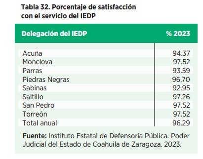
CALIDAD EN LOS SERVICIOS PROPORCIONADOS
En el transcurso del ejercicio 2023, a través de la Coordinación de Calidad del Instituto Estatal de la Defensoría Pública (IEDP), mantenemos el compromiso de brindar servicios de calidad, con resultados satisfactorios para las y los usuarios en este rubro.
Con este propósito actualizamos los tres instructivos de trabajo de la Unidad de Defensa Penal del IEDP y siete formatos de uso común para las y los defensores públicos. Esta actualización nos permitió que los servicios de defensa penal se homologaran y se mantuvieran vigentes, efectivos y en observancia a la política de calidad y principios del Poder Judicial de Coahuila.
Para medir la satisfacción de las y los usuarios del Taller de Orientación Prematrimonial aplicamos instrumentos de medición online mediante la plataforma Google Drive, lo que nos permitió aplicar mil 989 cuestionarios para obtener y analizar los datos y evaluar nuestra actuación.
Asimismo, informamos que realizamos encuestas a siete mil 177 personas para medir el grado de satisfacción con el servicio brindado, obteniendo un 96.29 por ciento de valoración general.
SISTEMA INTEGRAL DE CALIDAD Y GESTIÓN DOCUMENTAL
Nos encontramos en la recta final del proceso de implementación del Sistema Integral de Calidad y Gestión Documental (SICGD), bajo las normas ISO 9001:2015 Sistema de Gestión de Calidad e ISO 30301:2019 Sistema de Gestión Documental, de tal forma que durante el 2024 concretaremos la certificación de nuestros procesos clave, definidos en el alcance por parte de una entidad certificadora acreditada y reconocida a nivel internacional.


Con el propósito de garantizar un estricto apego a lo establecido en la norma ISO 19011:2018 Directrices para la Auditoría de los Sistemas de Gestión, se impartió por parte de la Asociación Española de Normalización (AENOR), los días 12, 13, 14 y 15 de septiembre, el Curso de Capacitación y Certificación de Auditores Internos en las normas ISO 9001:2015 e ISO 30301:2019.
Por lo que un grupo de 20 colaboradoras y colaboradores de distintas áreas del Poder Judicial, que participan en el Sistema Integral de Calidad y Gestión Documental, fueron capacitados y certificados por la AENOR para realizar las auditorías internas conforme a los requisitos de estas normas internacionales.
Cabe destacar que, durante el último trimestre de 2023, con el propósito de medir los resultados del Sistema Integral de Calidad y Gestión Documental, trabajamos en la alineación de la Política y los Objetivos Estratégicos del mismo, con los indicadores de Hallazgos 2022, publicado por la asociación civil México Evalúa, y con la Métrica de Justicia Abierta, esfuerzo de cocreación y coordinación entre el Instituto Nacional de Transparencia, Acceso a la Información y Protección de Datos Personales (INAI), la organización internacional World Justice Project (WJP) y el Instituto de Investigación en Rendición de Cuentas y Combate a la Corrupción (IIRCCC) de la Universidad de Guadalajara.
Finalmente, en el primer semestre de 2024 ejecutaremos un programa de auditorías internas que nos permitirá evaluar al SICGD, para tomar aquellas acciones correctivas y preventivas que se requieran para una correcta implementación.
OFICIALÍA DE PARTES
Mejorar los tiempos de respuesta a la persona justiciable es uno de los objetivos más importantes para el Poder Judicial. Por ello, mediante la Oficialía de Partes trabajamos para ser un elemento eficaz y eficiente en la recepción, gestión, digitalización y entrega oportuna de los documentos a los órganos jurisdiccionales que correspondan.
A través de esta área administrativa, en materia civil, mercantil y familiar, recibimos los escritos de demanda inicial con los que da comienzo un procedimiento judicial; y además recibimos los escritos de término que se presentan fuera del horario de los órganos jurisdiccionales. Mientras que en materia penal recibimos los exhortos, cartas rogatorias, suplicatorias, requisitorias, oficios o promociones, así como todos aquellos escritos y documentos que acompañen a las demandas de amparo directo y las promociones en las que se solicitan medidas cautelares, medidas preparatorias y procedimientos no contenciosos. En ese sentido, durante el año de 2023, en las Oficialías de Partes de los distritos judiciales de Monclova, Río Grande, Saltillo y Torreón recibimos 57 mil 41 demandas iniciales, 442 mil 427 promociones y cuatro mil 831 exhortos.
Asimismo, seguimos impulsando el uso del Buzón Electrónico de Poder en Línea 2.0, donde las y los litigantes pueden enviar demandas, promociones y demás escritos de manera más ágil y fácil las 24 horas del día.
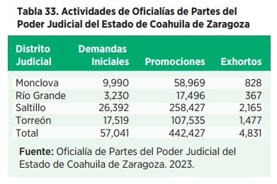
CENTRAL DE ACTUARIOS
Las y los actuarios tienen labor muy importante en nuestra institución, ya que realizan diligencias trascendentales para nuestra sociedad llevando el control de las diligencias que ordenen los órganos jurisdiccionales, como notificaciones o la práctica de embargos, entre otras acciones.
Por ello, con el fin de evitar diligencias fallidas en perjuicio de las y los justiciables, este año impulsamos acciones para mejorar el ejercicio de la función jurisdiccional y ser más eficientes, eliminando obstáculos comunes, privilegiando la comunicación con las distintas áreas jurisdiccionales y organismos auxiliares de la impartición de justicia.
Aunado a lo anterior, durante este año nos enfocamos en garantizar la seguridad jurídica, así como el debido proceso en el ejercicio de la función, por medio de la organización aleatoria, así como el control y estricta observancia de los requisitos, o formalidades legales, requeridas para la debida cumplimentación de las determinaciones judiciales que se necesiten realizar fuera de los órganos jurisdiccionales, como son decretos, autos, sentencias interlocutorias y definitivas, ya sea por medio de la boleta física o del Sistema de Boletas Electrónicas de Gestión Actuarial (BEGA).
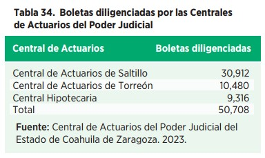
Por esta razón en 2023 creamos la Central de Actuarios en Materia Hipotecaria, con la que buscamos agilizar y fomentar un desempeño más eficiente por parte de los servidores públicos.
Además, a través de una línea de WhatsApp mantuvimos una comunicación directa e inmediata con las partes intervinientes en los procesos judiciales, para otorgarles información oportuna, veraz y certera sobre las citas agendadas.
Este año, las Centrales de Actuarios de los Distritos Judiciales de Saltillo y Torreón, además de la Central Hipotecaria, acumularon un total de 50 mil 708 boletas diligenciadas.

ARCHIVO JUDICIAL GENERAL
Los archivos protegen el patrimonio documental que da identidad a las instituciones, fomentan la difusión de la historia y establecen las herramientas necesarias para facilitar el acceso a estas fuentes de información. Por esa razón, en el Poder Judicial de Coahuila implementamos los mecanismos necesarios para llevar a cabo una adecuada gestión documental que facilite un servicio de calidad a la ciudadanía.
Por ser el órgano administrativo encargado de la recepción, depósito, resguardo, conservación y clasificación de la documentación y expedientes del Poder Judicial, en el Archivo Judicial General desarrollamos programas de mejora continua para capacitar, especializar y actualizar al personal en el empleo de métodos y técnicas archivísticas, así como de las tecnologías de la información, para garantizar la eficiencia y eficacia de su desempeño, así como la consulta expedita de los documentos que están bajo nuestro resguardo.
A partir de la implementación de dos módulos destinados a la gestión documental en la plataforma web de este Poder Judicial, en los órganos jurisdiccionales de primera y segunda instancia de Saltillo y primera instancia en los Distritos Judiciales de Acuña, Monclova, Región Carbonífera, Río Grande y Torreón, pudimos comenzar a capturar el inventario de los documentos jurisdiccionales, sistematizar los procesos de solicitud de expedientes y enviar remesas a los archivos de concentración.
Gracias a esto logramos homologar los sistemas de gestión, control y sistematización documental, facilitando la ubicación de los documentos jurisdiccionales en todos los distritos judiciales, protegiendo los datos personales contenidos en ellos por medio del control de acceso a estos módulos.
Con lo anterior, también generamos una atención más eficiente a la ciudadanía, al capturarse 119 mil 426 documentos judiciales.
Por lo que se refiere al levantamiento del inventario documental, durante el 2023 logramos capturar documentos sobre procesos judiciales del Juzgado Primero Civil de Saltillo que datan de 1927 hasta el año de 1990, y del 2012 al 2022. Beneficiando con ello la reorganización del juzgado y el etiquetado de las cajas para la homologación en su identificación.
Asimismo, implementamos los archivos únicos, en los que albergamos el archivo de trámite y el de concentración en los Distritos Judiciales de Acuña y Región Carbonífera.


En atención a las solicitudes de los órganos jurisdiccionales de Torreón, San Pedro de las Colonias, Monclova, Saltillo y Parras de la Fuente, realizamos la depuración documental correspondiente a legajos de comprobación inmediata, con el objetivo de conservar solamente los documentos que se generan con motivo del ejercicio de sus funciones jurisdiccionales y administrativas.
Durante el año 2023 continuamos con la atención al Sistema Integral de Búsqueda de Expedientes y Digitalización (SIBED). A solicitud de los órganos jurisdiccionales de primera instancia, les remitimos 50 mil 612 expedientes y recibimos por parte de ellos 151 mil 461 expedientes para su debido resguardo. Igualmente expedimos 117 mil 740 copias simples y 55 mil 69 copias certificadas, además de atender oportunamente 31 mil 922 consultas.
Mediante la Comisión Interdisciplinaria de Archivos llevamos a cabo seis sesiones ordinarias y una extraordinaria, en las cuales tratamos diversos temas como los proyectos de trabajo anuales, valoraciones documentales para definir el destino final de la documentación, la presentación de los módulos de expedientes y archivo en plataforma web, la sistematización de los envíos y recepción de remesas, y el levantamiento de inventario documental.
Por otra parte, realizamos la segunda transferencia al Archivo Histórico de dos documentos que son muy relevantes dado a su valor informativo, evidencial y testimonial, ya que muestran acontecimientos importantes de nuestro estado.
Ejemplo de ello es un documento que data del año de 1861, el cual es una diligencia en contra del presbítero Francisco Salas por conducta subversiva. En este se muestra la manifestación del clero ante las Leyes de Reforma en el Estado conformado por Nuevo León y Coahuila, así como la participación del Poder Judicial del Estado como mediador entre el gobierno del presidente Benito Juárez y la Iglesia Católica.
En colaboración con la coordinación de la Red Nacional de Archivos Judiciales de la CONATRIB, participamos en el Doceavo Seminario de Archivos de Tradición Ibérica, dentro del cual se llevó a cabo la primera exposición nacional de expedientes judiciales históricos denominada “Pasaje de la Justicia en México”, en la que presentamos documentos que fueron transferidos al Archivo Histórico de este Poder Judicial.
Finalmente, con motivo de la conmemoración del Día Internacional de Archivos, visitamos las instalaciones del Poder Judicial del Estado de México para participar en la mesa de reflexión denominada “La importancia de los archivos en la impartición de justicia”.
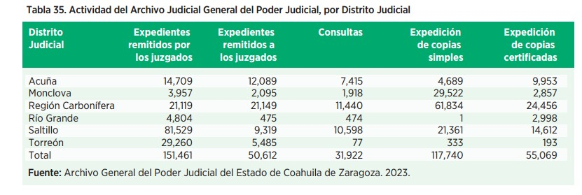

ESTADÍSTICA JURISDICCIONAL
Acordes a nuestro Modelo de Justicia, mantenemos el objetivo de consolidarnos como una institución ordenada y eficiente, cercana a la sociedad y con la cobertura suficiente que nos lleve a conservar la confianza de las y los coahuilenses, en relación a que su derecho a la justicia será protegido y respetado por nuestros juzgadores.
Para conservar el orden es preciso equilibrar la carga de trabajo en los órganos jurisdiccionales con los que contamos, distribuir adecuadamente los asuntos que ingresan al Poder Judicial, focalizar la impartición de justicia a las necesidades reales de la sociedad y adaptar nuestro quehacer a los cambios jurídicos que se nos presentan.

A través del procesamiento y análisis de los datos estadísticos reportados por los órganos jurisdiccionales y no jurisdiccionales es posible dirigir el rumbo de las acciones, así como poner a la disposición de toda persona datos de interés sobre nuestro quehacer.
Enseguida mostramos los datos cuantitativos que señalan el trabajo realizado por las Salas Colegiadas, Tribunales Especializados y Distritales, además de los Juzgados de Primera Instancia del Poder Judicial del Estado de Coahuila de Zaragoza.
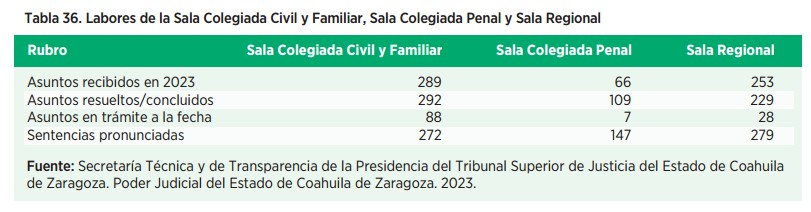
JUSTICIA EN LOS TRIBUNALES DE ALZADA
Las Salas Colegiadas Civil y Familiar, Penal y Sala Regional son los órganos encargados de atender y resolver los recursos de apelación en contra de las resoluciones formuladas por los juzgados de primera instancia, según la materia de su competencia; emiten jurisprudencias y dictaminan sobre excusas y recusaciones.
Las labores desarrolladas durante el año que nos ocupa por la Sala Colegiada Civil y Familiar, la Sala Colegiada Penal y la Sala Regional del Tribunal Superior de Justicia se muestran a continuación:
JUSTICIA EN EL TRIBUNAL DE CONCILIACIÓN Y ARBITRAJE
El Tribunal de Conciliación y Arbitraje es el encargado de conocer y resolver los conflictos laborales individuales y colectivos presentados entre las dependencias del Estado, las dependencias municipales y los órganos autónomos. La labor jurisdiccional que este año reporta este tribunal se detalla a continuación:
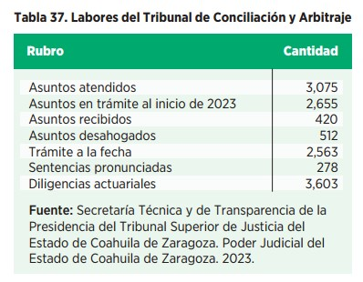


JUSTICIA EN LOS TRIBUNALES DISTRITALES
El Poder Judicial del Estado de Coahuila de Zaragoza dispone de cuatro Tribunales Distritales, los cuales son los órganos encargados de conocer de los recursos de apelación y queja que se suscitan en contra de autos y sentencias interlocutorias dictadas por las y los juzgadores de primera instancia. Estos se encuentran instalados en las sedes judiciales de mayor concentración poblacional, como son Monclova, Piedras Negras, Saltillo y Torreón.
En la siguiente tabla damos cuenta de su desempeño durante el año que informamos.
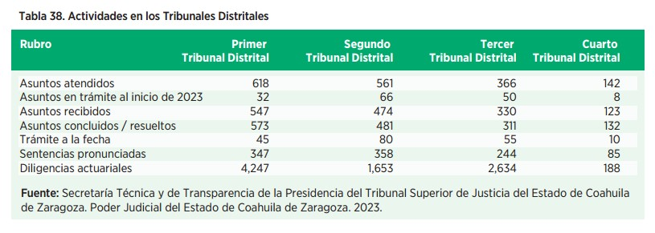
JUSTICIA ESPECIALIZADA
La especialización de nuestros órganos jurisdiccionales surge de la preocupación manifiesta del Poder Judicial para encauzar una justicia cercana a los problemas que principalmente aquejan a la ciudadanía.
Asimismo, la especialización en diversas materias genera que las personas juzgadoras sean capaces de comprender las mecánicas de los delitos, y generar prontitud y certeza a las resoluciones dictadas.
1. Tribunal Especializado en Narcomenudeo
La protección en el ámbito de derechos humanos y la inquietud de que todos aquellos que entran en conflicto con la ley penal, por cuestión de adicción a las drogas, tengan una justicia integral, nos lleva a proyectar la especialización en la materia a través de un Tribunal Especializado en Narcomenudeo.
Durante este 2023 realizamos la instalación del Consejo Consultivo del Tribunal Especializado en Narcomenudeo (TEN) del Estado de Coahuila, mismo que se encargará de dar seguimiento a la conformación de dicha instancia, así como a desarrollar estrategias que ayuden a enfrentar los problemas que atañen al estado en cuanto narcotráfico, que apoyen en la reconstrucción del tejido social.

Con este consejo impulsamos el trabajo en equipo entre los poderes de gobierno y la sociedad civil al designar a las personas que, de diferentes instituciones, fungirán como enlace para su adecuado funcionamiento.
A partir de ello, en el Poder Judicial iniciamos la capacitación y sensibilización para las personas que operarán este tribunal, por lo que llevamos a cabo diversas reuniones con las instituciones involucradas, entre las que destacan: la Mesa de Seguridad y Justicia de Torreón y la capacitación de operadores de justicia en Ciudad Juárez, Chihuahua.
Con estas acciones continuamos en la ruta que nos permite ofrecer una justicia cercana, procurando la mejora a la salud física y mental de las personas que son responsables penalmente de las conductas delictivas relacionadas con las adicciones, y la búsqueda por alcanzar una reinserción social efectiva en beneficio de la ciudadanía.
Con este tribunal representaremos una opción positiva para aquellas personas procesadas por delitos no graves, cometidos bajo el efecto de las drogas, al tener una visión de justicia restaurativa de trabajo comunitario, con un enfoque donde el modelo que se plantea es la recuperación y la reintegración a la sociedad de quienes consumen, al brindarles una atención especializada e integral. También significará una alternativa al proceso carcelario en Coahuila.
2. Juzgado Especializado en Medio Ambiente
Para garantizar el acceso a la justicia ambiental, el pasado mes de abril, en el marco de la celebración del Día Internacional de la Madre Tierra, pusimos en marcha el Juzgado Especializado en Materia Ambiental en el estado.

Este juzgado tiene como finalidad proteger el derecho a un medio ambiente sano para toda la población, mediante el fortalecimiento de la función jurisdiccional en la materia, garantizando los derechos de futuras generaciones de coahuilenses.


Asimismo, buscamos brindar un apoyo en la prevención del cambio climático, atendiendo específicamente los delitos que atenten contra el medio ambiente. Con la especialización y capacitación del personal jurisdiccional contribuiremos a tener sentencias que protejan y salvaguarden el derecho a un medio ambiente sano.
3. Juzgados Especializados en materia Hipotecaria
Este 2023 trabajamos en el fortalecimiento de la atención de las necesidades de justicia de la ciudadanía, tramitando con mayor rapidez, agilidad y celeridad los procedimientos en materia hipotecaria, una de las de mayor demanda en nuestra entidad, garantizando así una justicia efectiva.
Este juzgado atiende a la visión de ofrecer una impartición de justicia más expedita y específica, para garantizar el derecho de las y los coahuilenses a la protección del patrimonio familiar y que tengan una asesoría especializada.
Además, con esta especialización las y los funcionarios que conforman estos órganos jurisdiccionales tienen la sensibilidad del bien en conflicto, además de ser figuras equilibradas entre la persona deudora y la institución financiera.
En el año que se informa, en los tres juzgados con especialización hipotecaria en la entidad recibimos cuatro mil 987 asuntos y dictamos dos mil 141 sentencias.
4. Tribunales Laborales
A un año de la implementación de la reforma en materia laboral, en el Poder Judicial del Estado de Coahuila de Zaragoza reconocemos su importancia en el fortalecimiento al respeto de la dignidad humana, el bien común, la igualdad, equidad, inclusión y no discriminación.
Contribuimos a dar certidumbre y efectividad al derecho de acceso a la justicia, proveyendo seguridad jurídica, legalidad y certeza, enfatizando el valor del trabajo humano, que además favorece el desarrollo económico y la producción en el estado.
En este año hemos logrado sortear con éxito los retos en la materia y nos enfocamos en mejorar la adecuada administración de justicia laboral, respaldada por los derechos humanos y tratados internacionales que posibilitan la tutela judicial efectiva, proponiendo en primera instancia una la solución pacífica a los conflictos, que sea justa y equitativa al contar con seis Tribunales Laborales ubicados en los Distritos Judiciales de Acuña, Monclova, Región Carbonífera, Río Grande, Saltillo y Torreón.
La transparencia en la conducción de las audiencias, toda vez que los juicios se realizan en presencia de un juez, permite que las sentencias sean más claras y comprensibles para las partes; además, el carácter conciliatorio de este nuevo modelo permite juicios más ágiles y expeditos, y favorecen la convivencia social.
A fin de rendir cuentas de nuestra actuación en 2023, informamos que en los Tribunales Laborales en la entidad recibimos cuatro mil 463 asuntos y dictamos 312 sentencias.
Seguiremos trabajando arduamente para mejorar los procesos y tiempos, siempre en beneficio de la sociedad coahuilense.
LABORES DE LOS JUZGADOS DE PRIMERA INSTANCIA
En Coahuila contamos con 64 juzgados de primera instancia, los cuales se distribuyen a lo largo del estado en ocho distritos judiciales.


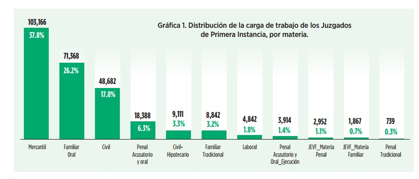
En materia Civil disponemos de 25 juzgados, de los cuales ocho conocen asuntos exclusivamente del orden Civil, tres cuentan con especialización en materia Hipotecaria, uno de ellos en materia Ambiental y nueve más tienen competencia en asuntos civiles y mercantiles, además de que cuatro son especializados Letrados, es decir, que tienen competencia en asuntos civiles y mercantiles de cuantía menor.
Contamos también con 19 juzgados familiares y seis en materia Mercantil; seis Tribunales Laborales; un juzgado que conoce asuntos de materia Penal bajo el Sistema tradicional y siete juzgados en materia Penal del Sistema Acusatorio y Oral, de los cuales seis están especializados además en Violencia Familiar contra las Mujeres.
Durante 2023, mediante los órganos mencionados, dimos atención a 273 mil 871 asuntos. Destacamos que en un ejercicio sin precedente, este año implementamos el inventario anual de expedientes en trámite en los órganos jurisdiccionales, en el que su personal realizó una revisión exhaustiva de cada uno de los asuntos físicos con los que contaban, con lo cual se procedió a enviar al archivo provisional y de concentración aquellos expedientes que se encontraban en inactividad procesal o caducidad. Con esta acción se logró un desahogo de 51 por ciento en el número de asuntos en trámite para un funcionamiento más eficiente en cada juzgado.

Enseguida desagregamos la actividad de los Órganos Jurisdiccionales de Primera Instancia por materia en que se especializan:
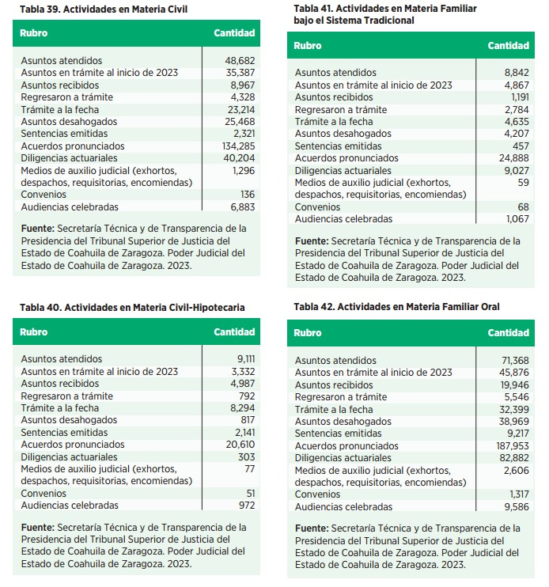
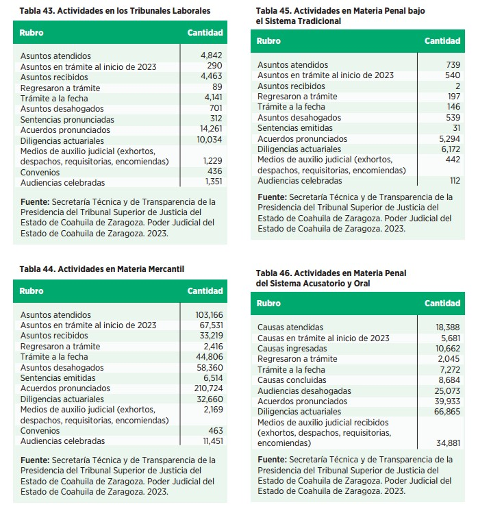
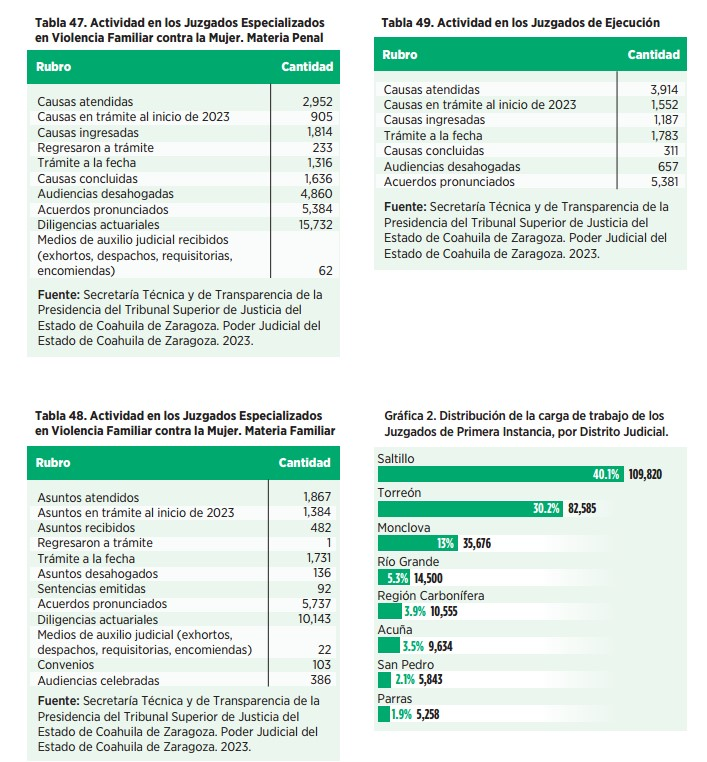

RESULTADOS DE LA CONSOLIDACIÓN DEL SISTEMA DE JUSTICIA PENAL ACUSATORIO Y ORAL EN COAHUILA
Continuamos dirigiendo acciones para fortalecer la operación de la materia Penal en nuestra entidad, y mantener la constancia y solidez en la procuración y administración de justicia.
En este sentido, en octubre se dio a conocer el documento Hallazgos 2022: seguimiento y evaluación de la justicia penal en México, publicado por la asociación civil México Evalúa. Dicha publicación tiene como propósito evaluar el fortalecimiento de la operación del sistema de justicia penal en los estados, enfocándose en la calidad de la justicia, su efectividad y eficiencia en la respuesta, desde el punto de vista de las personas usuarias. De ahí su relevancia para el Modelo Coahuila, donde confirmamos que nuestro actuar está centrado en las y los justiciables.
Entre los resultados publicados, destaca que Coahuila se posicionó en el segundo lugar en el ranking nacional, subiendo una posición respecto al año anterior.
El documento señala que el nivel de confianza institucional hacia las personas juzgadoras del Poder Judicial de Coahuila es del 72.05 por ciento, siendo la media nacional el 61.5 por ciento, lo que nos coloca por encima de ésta, destacando que la confianza ciudadana en la manera en que se imparte justicia en el estado ha mostrado un incremento importante.

Asimismo, nos reconoce como una de las entidades con menor índice de impunidad en el delito de secuestro, con 24 por ciento, cifra que se ha logrado gracias a la efectividad de los juicios orales y los procedimientos abreviados que llevan a cada caso a una sentencia condenatoria.
Además, en la entidad ha disminuido el uso de la prisión preventiva: el 63 por ciento de las personas llevan sus procesos en libertad. Y de estas, la totalidad de las personas que llevan su medida cautelar en libertad cumplen con el proceso de forma efectiva, sin sustraerse de la acción de la justicia.
Con este resultado, la labor del Poder Judicial del Estado de Coahuila es reconocida como ejemplo a nivel nacional, por nuestro esfuerzo en la identificación de problemáticas sociales y la respuesta a estas con la creación de tribunales especializados que dan mayor certeza a la sociedad, llevando una justicia cercana y abierta.
El rubro del Estado de Derecho y su aplicación práctica también es medido por instituciones internacionales de la sociedad civil, como World Justice Project (WJP), que en su reporte 2023 señala: “El estado de Coahuila se encuentra entre las entidades con mayor adhesión al Estado de Derecho”, y le da una puntuación de 0.45, colocándonos en séptimo lugar a nivel nacional. Un resultado que demuestra la colaboración permanente entre los distintos órdenes de gobierno.
En este reporte, el Poder Judicial de Coahuila destaca también en el indicador de justicia penal, subiendo de 0.39 a 0.42, en el que somos reconocidos al contar con un sistema de justicia penal efectivo, que respeta los derechos de las víctimas y los de las personas imputadas.
Por otra parte, en la Encuesta Nacional de Victimización y Percepción sobre Seguridad Pública (ENVIPE) 2023, publicada por el Instituto Nacional de Estadística y Geografía (INEGI), nos mantenemos como uno de los sistemas de impartición de justicia que más confianza ostenta entre la ciudadanía, al colocarnos con el 66 por ciento de confianza hacia nuestras juezas y jueces.
Finalmente, el Instituto Mexicano para la Competitividad (IMCO), dentro del Índice de Competitividad Urbana (ICU) 2023, destaca a las ciudades de Saltillo, Torreón, Piedras Negras y la zona de Monclova-Frontera por su capacidad para atraer, generar y retener talento e inversión, en particular en el subíndice correspondiente al Estado de Derecho.
RECURSOS FINANCIEROS
En el Poder Judicial tenemos como propósito la correcta gestión y el adecuado control de los recursos financieros, para garantizar el derecho de las y los coahuilenses de que se les administre justicia, así como el generar información financiera que permita una adecuada rendición de cuentas y transparencia en el marco de las disposiciones normativas aplicables.


En cumplimiento a la atribución de administrar de manera óptima los recursos financieros, destinamos el presupuesto al cumplimiento del pago de la nómina al personal en activo y personas pensionadas, a la adquisición de materiales y suministros, y al mantenimiento y adecuación de los espacios, entre otros rubros.
PRESUPUESTO
Por lo que se refiere al presupuesto, y como resultado de la puesta en práctica de mecanismos de planeación, seguimiento y control del gasto institucional, en el Poder Judicial del Estado de Coahuila ejercemos nuestros recursos de manera responsable. Inicialmente, el Congreso del Estado nos autorizó un monto de mil 14 millones 799 mil 255 pesos, mismo que fue fortalecido con ministraciones adicionales de la Secretaría de Finanzas del Gobierno estatal, para alcanzar un presupuesto de mil 151 millones 557 mil 931 pesos ejercidos en su totalidad al 31 de diciembre de 2023.
Nuestro compromiso en la adecuada administración de los recursos es firme, y por ello trabajamos para consolidarnos como una institución que maximiza el acceso y calidad de la justicia, al tiempo que ejerce el presupuesto público eficientemente.
EVALUACIONES DE LA AUDITORÍA SUPERIOR
Gran parte de la eficiencia lograda se debe a la supervisión a la que estamos sujetos por parte de áreas especializadas al interior del Poder Judicial, como la Auditoría Interna, la Visitaduría Judicial General y el Consejo de la Judicatura. Su vigilancia permanente significa que todas y todos quienes laboramos en este poder público rendimos cuenta de nuestro trabajo.
Esta labor ha dado resultados, por lo que hemos sido reconocidos por la Auditoría Superior del Estado de Coahuila de Zaragoza en el Informe de Evaluación del Proceso Presupuestal, donde obtuvimos la calificación de 100 por ciento en el cumplimiento de la elaboración del presupuesto. Dicho informe analiza el proceso de composición, discusión, análisis y aprobación de los anteproyectos, proyectos y presupuestos definitivos.
PRESUPUESTO BASADO EN RESULTADOS
Por sexto año consecutivo, la Auditoría Superior del Estado nos evaluó con el 100 por ciento en la elaboración del presupuesto aprobado para el ejercicio 2023, según los lineamientos establecidos en la Ley General de Contabilidad Gubernamental, la Ley de Disciplina Financiera de las Entidades Federativas y los Municipios y, en su caso, la Ley Reglamentaria del Presupuesto de Egresos del Estado de Coahuila de Zaragoza y los Códigos Municipal y Financiero de los Municipios del Estado de Coahuila de Zaragoza.
Este resultado nos colocó en la primera posición entre las 136 instancias evaluadas de los tres poderes de gobierno, siendo testimonio del compromiso de esta entidad pública por garantizar la transparencia y alineación de los objetivos públicos para asegurar la solidez y sostenibilidad de las operaciones judiciales.
FONDO DE MEJORAMIENTO PARA LA ADMINISTRACIÓN DE JUSTICIA
Este año continuamos con la estrategia de orientar los recursos generados por disponibilidades presupuestarias para la atención de proyectos prioritarios, para mantener una continuidad operativa de nuestros servicios.
Por tanto, a través del Fondo de Mejoramiento para la Administración de Justicia, resguardamos y administramos los recursos materiales y económicos que por concepto de depósitos de cauciones, fianzas, garantías y multas establezcan las autoridades judiciales del Estado y cualquier otro órgano del Tribunal Superior de Justicia con facultades para ello.
Como resultado de una administración cuidadosa, apegados a los principios de responsabilidad fiscal y la preservación del patrimonio, este año dicho fondo alcanzó la cantidad de 482 millones de pesos, los cuales fueron destinados al mejoramiento de las funciones judiciales.